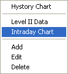
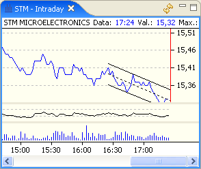

The Intraday Chart is shown using the menu that is opened with a righ-click on the Stock Watch window.

The window is split in zones each of which is capable of drawing one or more charts or indicators. The default setting will draw the closing price chart on the upper zone and the exchange volume on the lower zone.

To change the symbol to display just drag the new symbol's row from the Stock Watch window and drop on the chart window.
A right-click on the chart will open a menu from which is will be possible to select how the charts and technical indicators are drawn.
Eclipse Trader saves the data to build the intraday charts as they are received from the selected data source and only for the stocks that are listed in the Stock Watch window. The window's toolbar allows to update the chart by backfilling the data, if the data sources supports this feature.